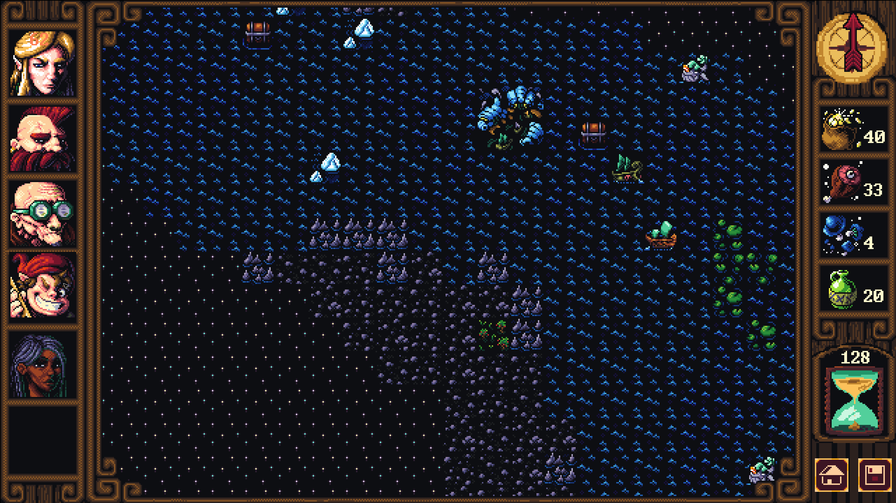

Art

Designing the art work for Mythical Whalers has been a slow and meticulous ordeal, pretty much all the art in the game has been through many iterations.

During initial prototypes of tilesets I noticed how jarring the borders were between the square tiles. The transitions had very square abrupt transitions which I wasn't a fan of. Here is an example of the Dwarf Fortress Phoebus tileset, while it effectively communicates the types of tiles it has a very square feel which leaves the world looking a little unnatural.

While experimenting with designing tile transitions I remembered my favorite dwarf fortress tileset.

The "Gemset" tileset by DragonDePlatino solves several problems, first by replacing ASCII charachters by simple sprites it is much easier to tell what was happening at a glance. Secondly it conveyed the type of tiles by showing a simple image on a black background, this allows for much smoother transitions between different tiles giving it a much smoother apearance. I was mesmorized by how elegant and pragmatic this solution was.
